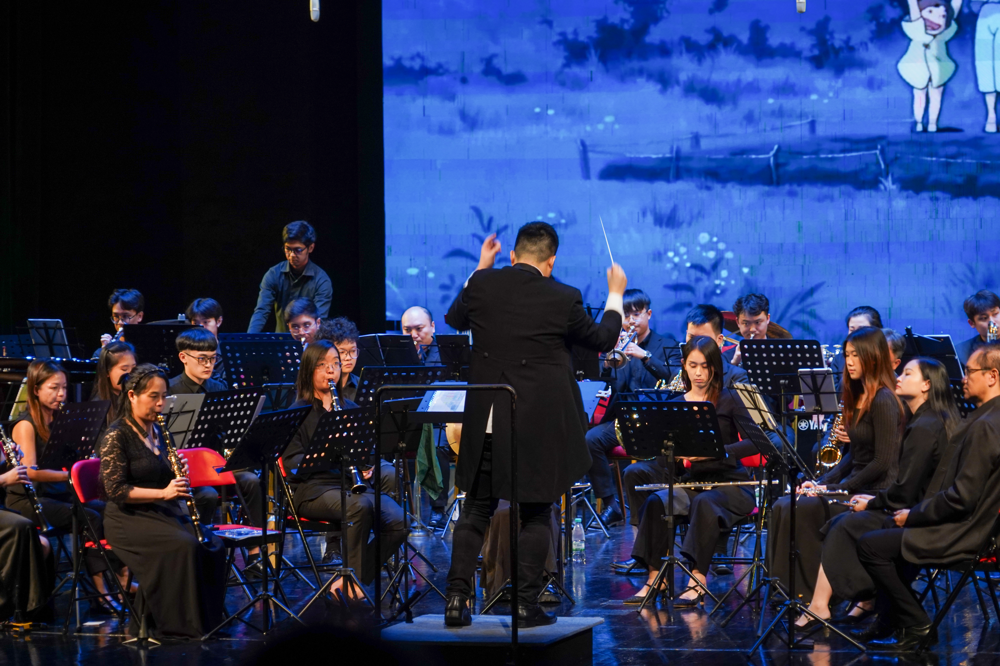
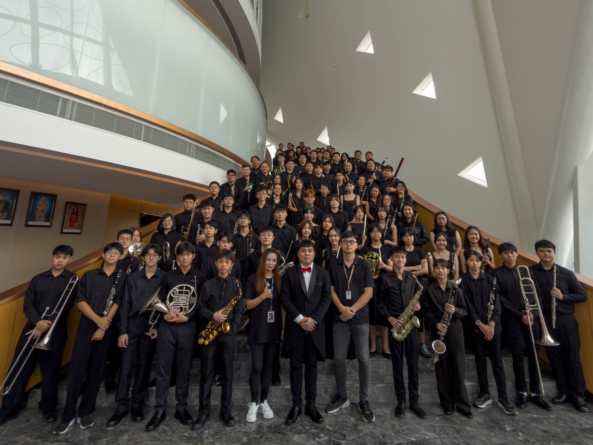
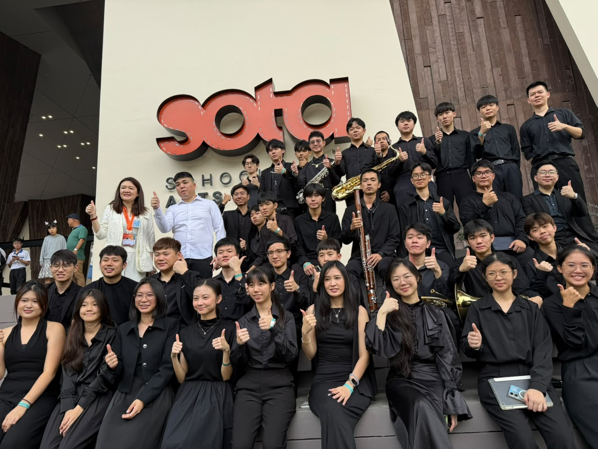
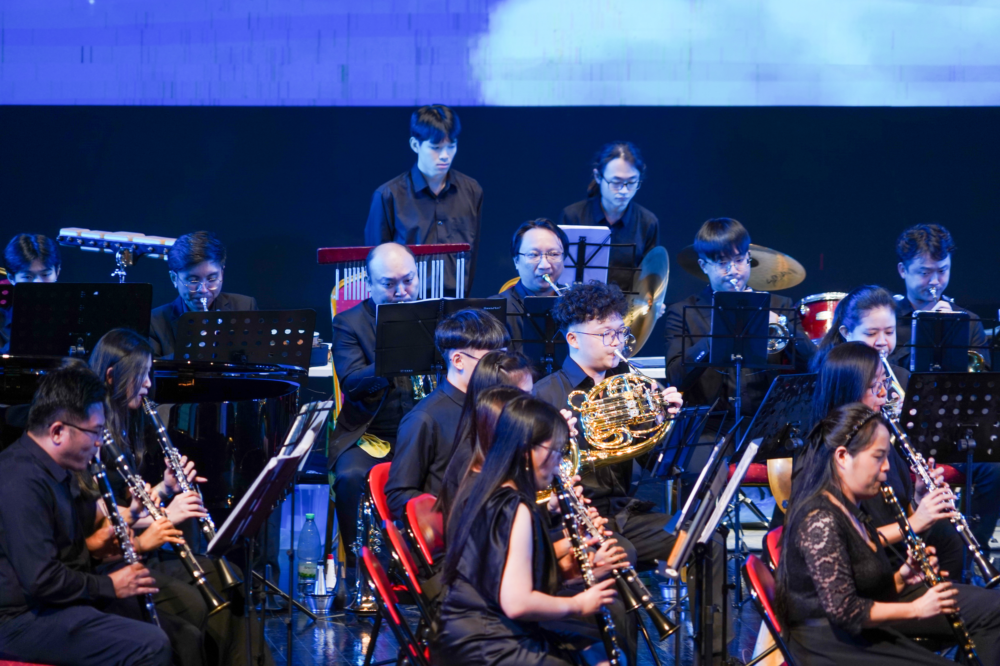
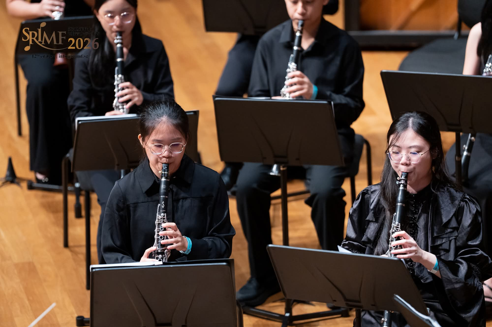
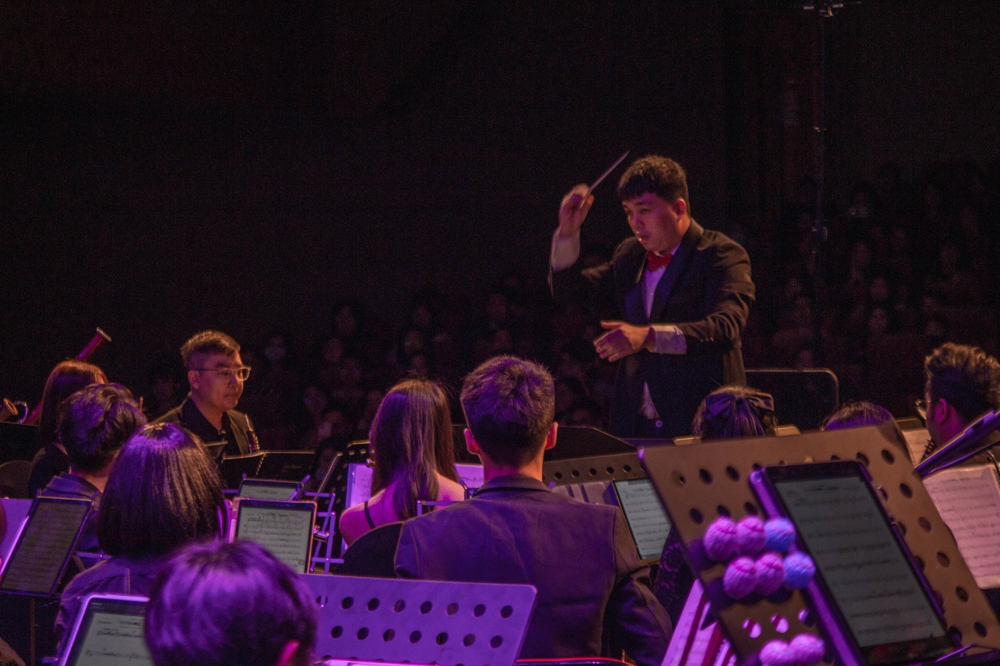
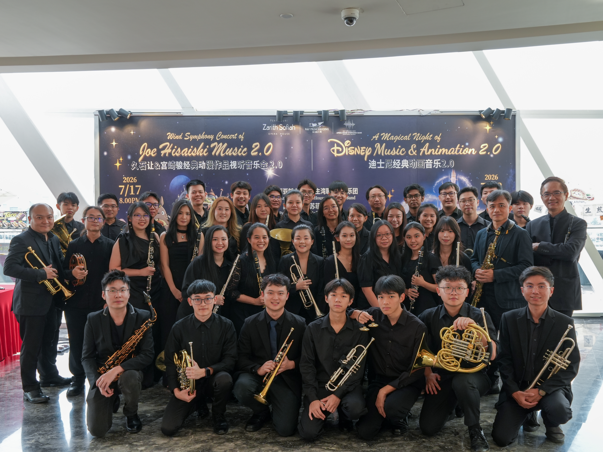
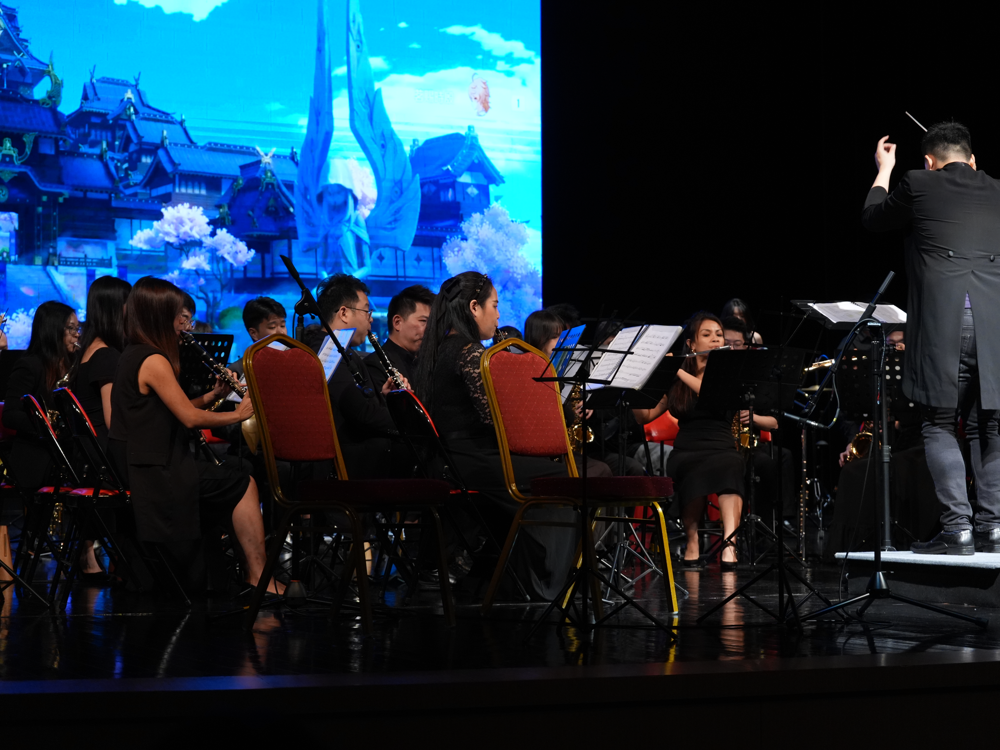

01
R & F Princess Cove Opera House Symphonic Band
Experience, discipline and performance — the principal ensemble of R & F Princess Cove.
Explore R & F Princess Cove Opera House Symphonic Band
01 / About
R & F Princess Cove Opera House Symphonic Band brings musicians together through performance, education and a shared passion for music.
From experienced performers to emerging young musicians, the organisation creates a place where sound, discipline and community move together.
02 / Ensembles

01
Experience, discipline and performance — the principal ensemble of R & F Princess Cove.
Explore R & F Princess Cove Opera House Symphonic Band02
A place for young musicians to learn, perform and grow together.
Explore R & F Princess Cove Opera House Youth Symphonic Band
03 / At a glance
04 / Gallery
Performance. Rehearsal. Community.





05 / Interested in joining?
Learn more about each band and find the appropriate contact person for enquiries about joining.